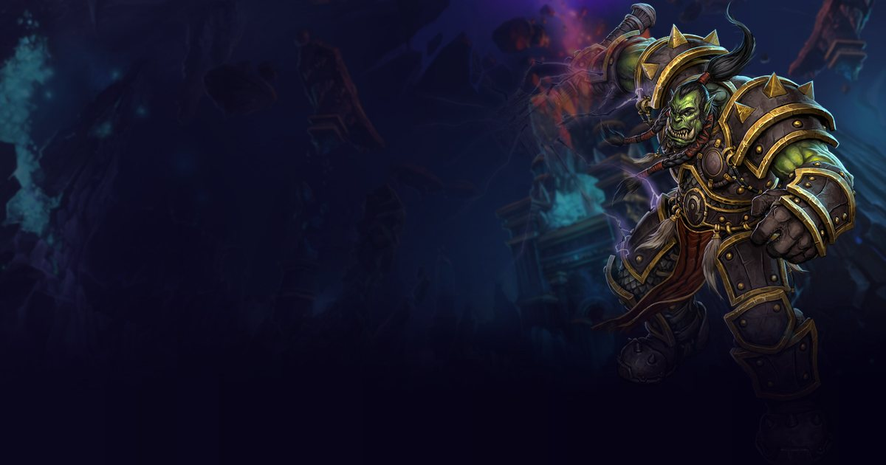

Elemental is the Ranged DPS specialization of the Shaman in WoW: Forever. This page summarizes its talent tree as it appears in the beta client (build 1.60.1.70170); the role is the one stated by the Icy Veins guide for the specialization.

The class's three trees, with the talents of the level-60 build (51 points) in colour and all the others in grey. The small number on the left of each row is the points you must have spent in the tree to reach it, and each talent's badge shows the points invested. This section is fixed: it does not move and does not depend on the calculator.
Our level-60 simulator build (51 points), the one used for the ranking: talents, gear and rotation are on the ranking page.
Gear, rotation and damage by ability for this level-60 build: Shaman Elemental →
Rank 5/5: Reduces the mana cost of your Shock, Lightning Bolt, Lava Burst, and Chain Lightning spells by 10%.
Rank 5/5: Increases the damage done by your Lightning Bolt, Chain Lightning, and Earth Shock spells by 5%.
Rank 4/5: Reduces the cooldown of your Shock spells by -0.8 sec.
Rank 3/3: Increases the damage done by your Fire Totems and by your Flame Shock, Fire Nova, and Lava Burst spells by 15%.
Rank 1/1: Gives you a 10% chance to enter a Clearcasting state after casting any Fire, Frost, or Nature damage spell. The Clearcasting state reduces the mana cost of your next damage spell by 100%.
Rank 3/3: Reduces the cast time of your Lightning Bolt, Chain Lightning, and Lava Burst spells by -0.50 sec.
Rank 1/1: Increases the critical strike chance of your Lightning Bolt and Chain Lightning spells by 3%.
Rank 3/3: Gives your Lightning Bolt and Chain Lightning spells a 10% chance to cast a second, similar spell on the same target at no additional cost that causes half damage and no threat.
Rank 5/5: Increases the critical strike damage bonus of your Searing and Magma Totems and your Fire, Frost, and Nature spells by 100%.
Rank 1/1: You hurl molten lava at the target, dealing 164 Fire damage. If your Flame Shock is on the target, Lava Burst deals 20% increased damage.
Rank 5/5: Improves your chance to get a critical strike with all spells and attacks by 5%.
Rank 5/5: Increases your Intellect by 10%.
Rank 5/5: Reduces the Mana cost of your totems and any spells that summon or move them by 25%.
Rank 3/3: Allows 50% of your Mana regeneration to continue while casting.
Rank 2/5: Reduces the Mana cost of your healing spells by 2% and improves your chance to hit by 2%.
Our simulator's priority at level 60, set against what Icy Veins recommends. Their guides are written for the level-30 beta and for leveling: we keep what everyone agrees on, adopt what the simulation confirmed at level 60 and say where the two differ.
Agreed: Searing Totem at the start, Flame Shock kept up, Lightning Bolt as the filler. The simulator adds Lava Burst (+20% under Flame Shock) and Lightning Overload. Fire Nova, Chain Lightning and Earth Shock are area tools or too expensive: on one target they cost more mana than they return (measured: -43 to -65 DPS). The Elemental's real ceiling is mana: without potion and gem it loses 30% of its damage. Talents corrected after measuring: Mindfulness (50% of the regeneration continues while casting) and Totemic Focus, from the Restoration tree, replace points with no effect (Mental Dexterity, Ghost Wolf...) and are worth +40 DPS; Tidal Focus (+2% hit) adds 9 more DPS (assumption: it applies to offensive spells).
Measured by the simulator on the character above: the DPS gained by one more point of each stat, with the same random draws on both sides. The relative value compares each stat with one point of spell power. Crit, hit and haste are counted per rating point, like Strength or Agility, so they compare directly; they respect the caps: hit at the cap adds nothing. A value near zero or negative is within the margin of error or tied to a limit (mana, cap).
| Stat | DPS gained | Relative value | |
|---|---|---|---|
| Hit per rating point | 0.56 | 1.18 | |
| Spell power per point | 0.475 | 1.0 | |
| Crit per rating point | 0.266 | 0.56 | |
| Intellect per point | 0.174 | 0.37 | |
| Spirit per point | 0.092 | 0.19 | |
| Haste per rating point | 0.009 | no effect | |
| Strength per point | 0.0 | no effect | |
| Agility per point | 0.0 | no effect |
DPS gained when points of each stat are added on top of the simulated gear. Click a stat (or its row in the table) to bring its curve forward; the ring marks the estimated cap, past which every point is worth less than 20% of what it gave at the start.
The three best of each category, measured by the simulator on the character above. Only one scroll and one elixir or flask can be worn at a time: each gain is the DPS this consumable brings alone, compared with an empty slot, the rest of the set unchanged. Gains in the same category therefore do not add up. The row marked with a dot is the one in the simulated set.
| Consumable | DPS | Gain |
|---|---|---|
| Scroll of Intellect ● | +4.4 | +1.0 % |
| Scroll of Spirit | +2.5 | +0.5 % |
| Consumable | DPS | Gain |
|---|---|---|
| Flask of Ancient Knowledge ● | +85.6 | +22.9 % |
| Elixir of the Mage-Lord | +19.0 | +5.1 % |
| Greater Arcane Elixir | +16.6 | +4.5 % |
| Consumable | DPS | Gain |
|---|---|---|
| Brilliant Wizard Oil ● | +20.7 | +4.7 % |
| Brilliant Mana Oil | +14.0 | +3.2 % |
| Well Fed (spell power food) ● | +11.9 | +2.7 % |
The gear our optimizer picks for this specialization among the items known from the beta (dungeons, the few raid items already known and crafted gear, which can be bought or made for you: prices and materials are not taken into account), with item effects simulated. Nothing is hand-picked: it is the result of the ranking's computation, and it will change as new items are discovered.
Enchantments up to skill 300, valued by the simulator when they give flat stats or flat weapon damage. The character does not need the profession: they can be bought or applied by an enchanter; Leatherworking armor kits (chest, legs, feet, hands) and Engineering scopes are counted too. A kit and an enchantment share the same permanent slot: a piece carries one or the other, and the legs, which have no enchantment, get the kit; spell-proc enchants (Crusader, Fiery Weapon...) and school damage are not simulated. The beta data has no ring enchantment up to skill 300.
Icy Veins guide dated 2026-10-02, read on September 21, 2026.
These are the deepest talents in the tree: they require 30 points already spent in the specialization. Official game text, at maximum rank.
You hurl molten lava at the target, dealing 164 Fire damage. If your Flame Shock is on the target, Lava Burst deals 20% increased damage.
Open Shaman in the talent calculator
Spend your 51 points, compare the three specializations and share your build by link.
Talent data comes from the beta client. The level-60 build, gear, stats and rotation come from our simulator and are validated by DPS measurements; the rotation is compared with the Icy Veins guides, written for the level-30 beta. Healing is not simulated. This data will change with the beta and with the game's launch on November 4, 2026.